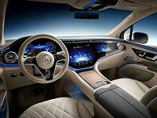
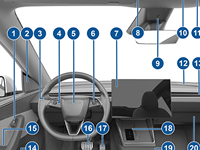
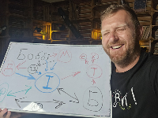

Кермо чи меню: як якісний інтерфейс визначає ефективність сайту
Розділ 1
Технічна потужність сайту
Коли ми говоримо про вебсайт, часто акцентуємо увагу на його технічній потужності: швидкості завантаження, надійності бекенду, складності використаних технологій. Усе це важливо — це і є "двигун" вашого сайту. Але чи справді користувач взаємодіє з цим двигуном? Чи залежить його рішення залишитися на сайті лише через потужні технічні характеристики?
Розділ 2
Важливість якісного інтерфейсу
Правда така, що користувач взаємодіє лише з тим, що видно назовні:
веб-інтерфейсом. І як показує аналогія, яку ми зараз проведемо, навіть
найпотужніша технічна частина сайту не втримає користувача, якщо керування
незручне.
Уявіть собі найсучасніший, найшвидший і найнадійніший автомобіль. Він
аеродинамічний, має потужний двигун, ідеальні гальма та карбоновий кузов —
технічна мрія! Але...
Ви сідаєте за кермо і починаєте крутитися та оглядатися. Ви не можете
зрозуміти "що де знаходиться" бо:
- Важіль коробки передач заховано під сидінням;
- Педалі гальма та зчеплення зміщені до середини кузова;
- Колесо керування розташоване занадто близько і це не зручно;
- Показники на панелі приладів перекриваються іншими пристроями і треба відхилятися, щоб їх розгледіти.
Уявили себе на місці водія…Які ваші відчуття? Здивування і перше питання: "А як же їхати?". Тут, звісно, трішки перебільшено з аналогією (не буває важілю КПП під сидінням), але якщо пересісти з сучасного автомобіля з бездоганним керуванням та ергономікою - на автомобіль моделі 70-х років, то, мабуть, будуть схожі відчуття. Тоді стає зрозуміло – інтерфейс – це важливо!
Адже водій / водійка взаємодіє лише з органами управління і від їхньої зручності, досяжності та ергономіки залежить комфорт та ефективність поїздки. Якщо все під рукою, інтуїтивно зрозуміло, все натискається і на своєму місці — тоді це чудовий автомобіль, і ми можемо із задоволенням рухатися до точки призначення! Можемо вирушати! 🚘 😊
Розділ 3
Бар'єри інтерфейсу: чому користувач тікає
А тепер уявімо сайт, де розробник не прийняв до уваги потреби користувача.
На сайт може зайти будь-хто: вчитель, інженер, пекар, пенсіонер і той самий
водій. Вони всі важливі відвідувачі, хоча можуть нічогісінько не знати про
сервери, бази
даних чи мови програмування. Їм, якщо відверто, і байдуже. Вони —
тут по справі і в них свої завдання.
Вони хочуть відвідати сайт та інтуїтивно зрозуміти "що до чого" і
як "доїхати" куди зібралися (тобто виконати потрібну дію): "купити",
"зареєструватися", "знайти", "скасувати".
Проте цей відвідувач / відвідувачка стикаються з низкою незручностей, які
викликають дискомфорт в користуванні:
- Навігація:
- Кнопки "Замовити" / "Зареєструватися" важко знайти або вони зливаються з іншим контентом;
- Меню на мобільному зникає або його неможливо розгорнути.
- Візуальні бар'єри:
- Сторінка "стрибає", коли дозавантажуються зображення;
- У браузері Chrome сайт виглядає добре, а в Firefox або Safari - частина контенту зникає.
- Функціональні незручності:
- Ключові кнопки не реагують на натискання або ведуть на порожню сторінку;
- Сайт довго завантажується (хоча сервер потужний) через не оптимізовані зображення;
- Надмірна кількість спливаючих вікон, які закривають контент;
- Користувач не розуміє, що робити далі.

А що далі?
Користувач швиденько тікає звідти (бо все незрозуміло і нічого
не виходить виконати) і пересідає на інше "авто" (тобто сайт), бо їхати ж
йому
все-таки треба.
І складається так, як говорить наш викладач на курсі з якісної побудови
веб-інтерфейсів (осінь 2025): "З неякісним інтерфейсом далеко не поїдеш."
🚗
А їхати нам потрібно, тому їдемо далі 😊.
Розділ 4
Якісний інтерфейс — ваш шлях до результату
Якісний інтерфейс — це те, що перше бачить користувач і з чим він
взаємодіє.

Саме від цього залежить, чи зрозуміє все відвідувач і чи залишиться на
сайті, щоб отримати бажаний результат.
Користувач, заходячи на сайт (з будь-якого пристрою), має миттєво
зрозуміти:
- Про що сайт? (візуальність, читабельність);
- Де тут меню? (навігація);
- Як виконати дію, заради якої він прийшов? (кнопки всі на місці і чітко видимі);
- Де тут "газ", а де тут "гальма"? 😊
Все має бути "під рукою", легким та зрозумілим. Такий сайт дозволяє швидко знайти потрібну інформацію, виконати потрібну дію (купити, зареєструватися, знайти продукт) і отримати результат.
Wikipedia - що таке веб-інтерфейс?
Розділ 5
Навчання та практика
Потужний бекенд і швидкий сервер — це необхідна основа.
Але саме якісний, інтуїтивно зрозумілий інтерфейс визначає успіх
вашого сайту.
Він є "панеллю приладів" та "керуючими органами" для користувача і його
зручність — єдиний шлях до цільової дії.
Якісний веб-інтерфейс — це не випадковість, а результат знань і практики.
Тому вивчення якісної розробки інтерфейсів — це інвестиція в
майбутнє кожного сайту.

Чим більше ми розуміємо потреби користувачів і тренуємося створювати
інтуїтивно зрозумілий веб-інтерфейс, тим більше шансів, що наш сайт буде не
просто технічно потужним, а й зручним, ефективним, результативним та
улюбленим.
Навчаючись та практикуючись ми зможемо створювати такі інтерфейси, якими
буде приємно користуватися — і тоді ваш сайт завжди приведе користувача до
потрібного результату!